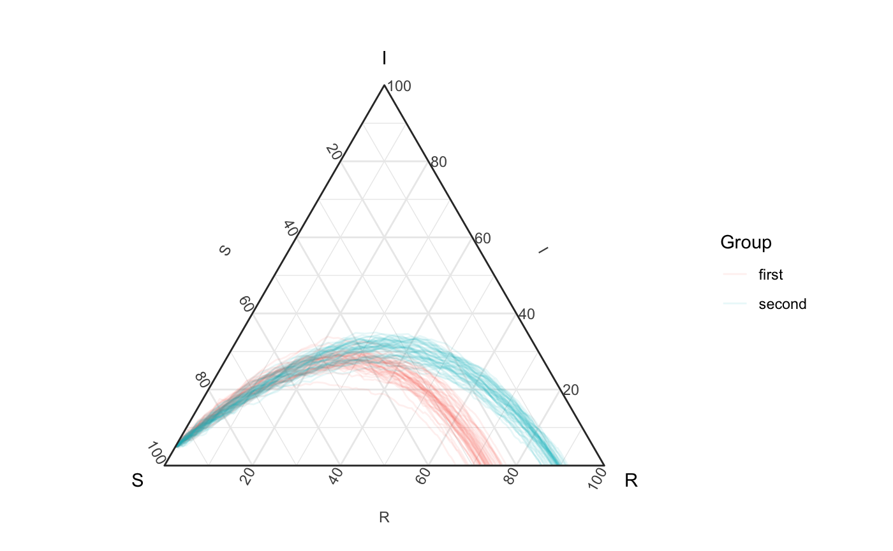
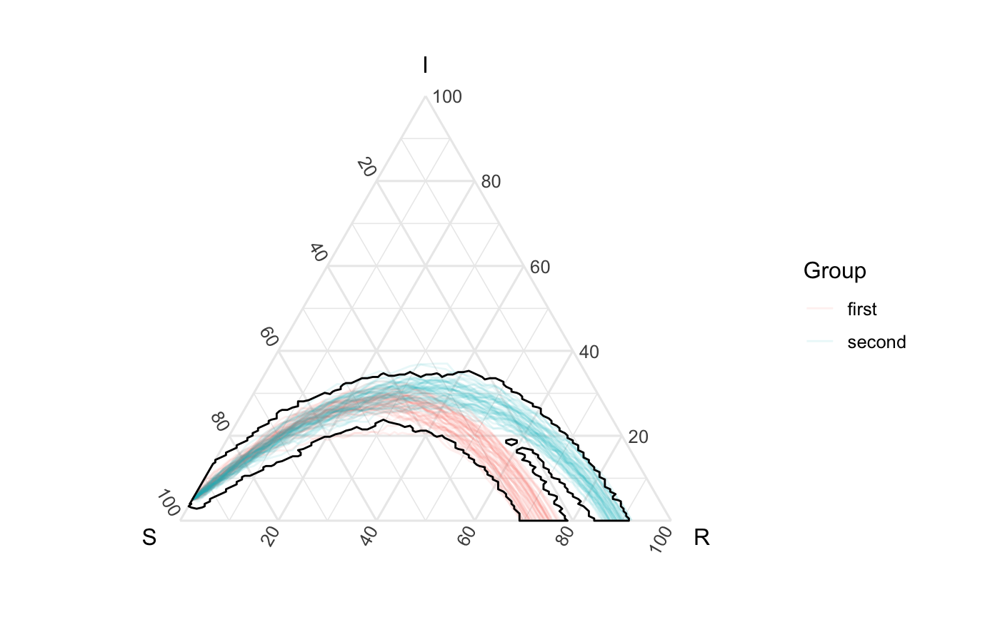
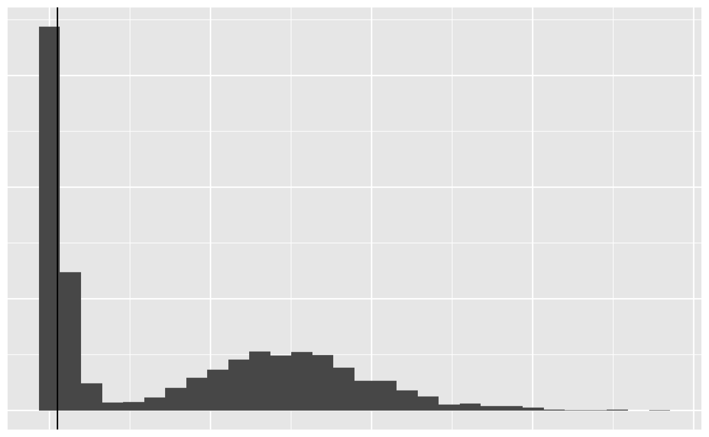
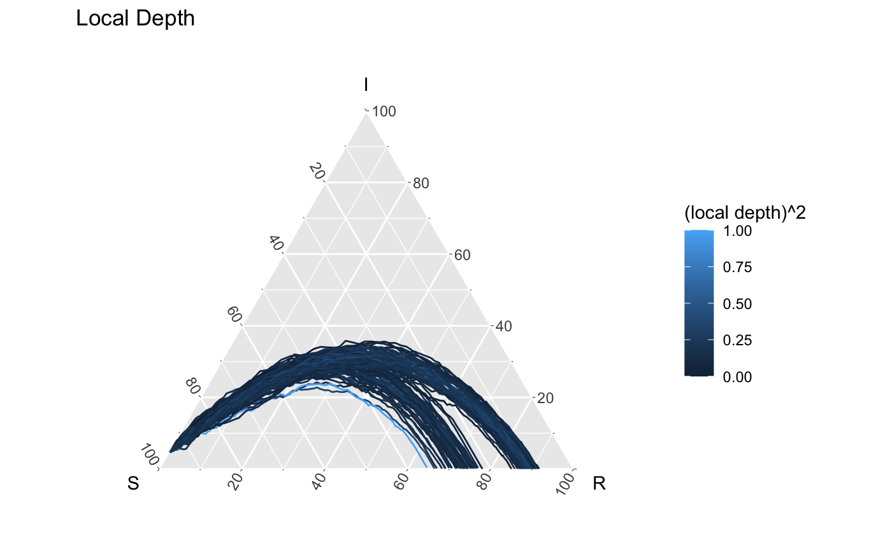
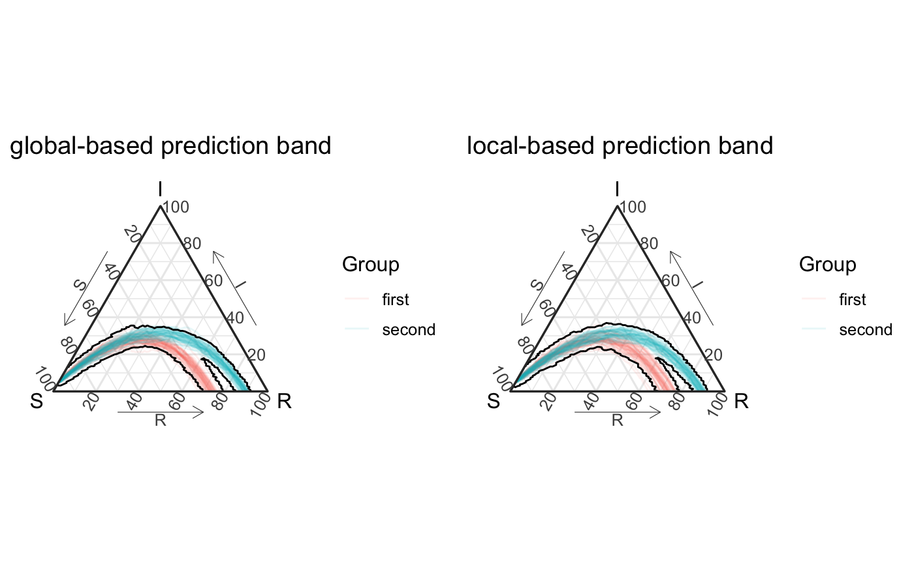

Depths’ impact on prediction bands
Source:vignettes/not-built-vignettes/depths-impact-on-prediction-bands.Rmd
depths-impact-on-prediction-bands.RmdOverview
This vignette focusing on understanding how depth for functional/filamental data can aid in creating the best prediction bands for epidemic models. In this example, we present some SIR data (see Comparing bands and assessing containment for examples that can quickly apply to higher dimensions.), that contains interesting group structure, and we explore how local vs global depth creates different prediction bands.
Data generation
Here’s our visualization of simulations (actually from 2 different models), but we can imagine that we believe that the true epidemic comes from a mixture of these two models. That is
\[ \text{Epidemic} \sim .5 \cdot \text{Model}_1 + .5 \cdot \text{Model}_2 \] where \[ \text{Model}_1 = SIR(\beta = .1, \gamma = .03) \\ \text{Model}_2 = SIR(\beta = .15, \gamma = .05) \]
## first group ----------- beta <- .1 gamma <- .03 out <- simulate_SIR_agents(n_sims = 50, n_time_steps = 100, beta = beta, gamma = gamma, init_SIR = c(950, 50, 0)) df_group <- out %>% group_by(sim) %>% agents_to_aggregate(states = c("tI", "tR"), min_max_time = c(0,100)) %>% rename(S = "X0", I = "X1", R = "X2") ## second group ---------- beta <- .15 gamma <- .05 out2 <- simulate_SIR_agents(n_sims = 50, n_time_steps = 100, beta = beta, gamma = gamma, init_SIR = c(950, 50, 0)) df_group2 <- out2 %>% group_by(sim) %>% agents_to_aggregate(states = c("tI", "tR"), min_max_time = c(0,100)) %>% rename(S = "X0", I = "X1", R = "X2") df_all <- rbind(df_group %>% mutate(id = "first"), df_group2 %>% mutate(id = "second")) df_all_vis <- df_all %>% mutate(id2 = factor(paste0(id, sim), levels = paste0(rep(c("first", "second"), each = 100), rep(1:100, length = 200)))) %>% mutate(id2 = as.numeric(id2))
theme_set(theme_sir()) all_curves <- ggplot(df_all_vis) + geom_path(aes(x = S, y = I, z = R, color = id, group = id2), alpha = .1) + coord_tern() + labs(color = "Group") #> Coordinate system already present. Adding new coordinate system, which will replace the existing one. all_curves

Creation of prediction bands
Our current framework through geom_prediction_band uses a global distance-based depth based on work from Geenens & Nieto-Reyes’s distance depth (directly explorably with the function distance_depth_function) (Geenens and Nieto-Reyes 2017). Below you’ll see that, the visualized prediction band using this global depth doesn’t actually capture the area of the simplex we might want - specifically it seems to like the interior between these two groups a little bit more than what you and I might want. This is largely associated with the global nature of depth.
global_depth_pb <- all_curves + geom_prediction_band(data = df_all_vis, aes(x = S, y = I, z = R, sim_group = id2), pb_type = "delta_ball", conf_level = .6) + coord_tern() #> Coordinate system already present. Adding new coordinate system, which will replace the existing one. global_depth_pb

A local approach
Agostinelli & Romanazzi (2011) proposed an approach to create local depth, and we have extended their ideas to Geenens & Nieto-Reyes into a local distance based depth (directly explorably with the function local_distance_depth_function) (Agostinelli and Romanazzi 2011). Agostinelli & Romanazzi (2011) recommended a localized parameter \(\tau\) around the 20-30% quantile of the distance distribution - which we explore here.
Tau selection
dist_mat <- df_all %>% arrange(t) %>% # just to be safe select(-t) %>% group_by(id, sim) %>% group_split() %>% dist_matrix_innersq_direction(position = 2:4, verbose = TRUE) quantile(dist_mat,probs = 0:10/10) %>% t %>% data.frame(check.names = F) %>% DT::datatable(options = list(dom = 't'))
tau <- quantile(dist_mat,probs = .3)["30%"] dist_mat %>% c() %>% data.frame(dist = .) %>% ggplot(aes(x = dist)) + geom_histogram(bins = 30) + geom_vline(xintercept = tau)

Building an understanding
To gain a bit of understanding, we the below code allows us to explore the depth of each curve relative to global depth and local depth.
local_depth <- df_all %>% arrange(t) %>% # just to be safe select(-t) %>% group_by(id, sim) %>% filament_distance_depth(depth_func = function(dist_mat) { local_distance_depth_function(dist_mat, tau = tau) }, data_columns = c("S","I","R")) global_depth <- df_all %>% arrange(t) %>% # just to be safe select(-t) %>% group_by(id, sim) %>% filament_distance_depth(depth_func = function(dist_mat) { distance_depth_function(dist_mat) }, data_columns = c("S","I","R")) df_all_ld <- df_all_vis %>% group_by(id, sim) %>% nest() %>% ungroup() %>% mutate(local_depth = local_depth, global_depth) %>% unnest(col = c(data)) %>% mutate(local_depth2 = cut(local_depth, breaks = 5), global_depth2 = cut(global_depth, breaks = 5))
df_all_ld %>% ggplot(aes(x = S, y = I, z = R, color = global_depth, group = id2)) + geom_path() + coord_tern() + labs(title = "Global Depth", color = "global depth") #> Coordinate system already present. Adding new coordinate system, which will replace the existing one.

df_all_ld %>% ggplot(aes(x = S, y = I, z = R, color = local_depth^2, group = id2)) + geom_path() + coord_tern() + labs(title = "Local Depth", color = "(local depth)^2") #> Coordinate system already present. Adding new coordinate system, which will replace the existing one.

Here’s a different prediction band based on local depth. It’s slightly different because we’re filtering first (we may drop a few more than we want).
local_cutoff <- df_all_ld %>% pull(local_depth) %>% quantile(probs = .4) local_depth_pb <- all_curves + geom_prediction_band(data = df_all_ld %>% filter(local_depth > local_cutoff), aes(x = S, y = I, z = R, sim_group = id2), pb_type = "delta_ball", conf_level = 1) + coord_tern() #> Coordinate system already present. Adding new coordinate system, which will replace the existing one. grid.arrange(global_depth_pb + labs(title = "global-based prediction band"), local_depth_pb + labs(title = "local-based prediction band"), nrow = 1)

References
Agostinelli, Claudio, and Mario Romanazzi. 2011. “Local depth.” Journal of Statistical Planning and Inference 141 (2). Elsevier B.V.: 817–30. https://doi.org/10.1016/j.jspi.2010.08.001.
Geenens, Gery, and Alicia Nieto-Reyes. 2017. “On the functional distance-based depth.”